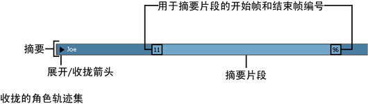
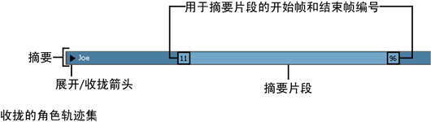

为已设置动画对象创建片段
- 选择要将其动画曲线放在片段中的已设置动画（关键帧或运动捕捉）对象。
- 在“Trax 编辑器”(Trax Editor)中，选择“创建 > 动画片段”(Create > Animation Clip) >
 。
。
此时将显示“创建片段选项”(Create Clip Options)窗口。
- 设定这些选项，然后单击“创建片段”(Create Clip)。
将为选定的对象动画通道创建一个片段，Maya 会自动新建一个角色集将该片段纳入 Trax。
提示：
- 若要快速为动画对象创建片段，请在场景视图中选择该对象，然后单击 Trax 编辑器中的创建片段(Create Clip)按钮
 。
按钮。
。
按钮。 - 您可以为动画创建包含表达式或约束的片段。请参见创建表达式片段或约束片段。
为角色创建片段
- 从场景视图或从“当前角色集”(Current Character Set)下拉列表中选择要为其创建片段的角色集（另请参见设置当前角色集(Set the current character set)）。
- 在“Trax 编辑器”(Trax Editor)中，选择“创建 > 动画片段”(Create > Animation Clip) > 。
此时将显示“创建片段选项”(Create Clip Options)窗口。
- 设定选项。
- 执行下列操作之一：
- 在“创建片段选项”(Create Clip Options)窗口中，单击“创建片段”(Create Clip)。
Maya 将为选定角色的动画通道创建一个片段，并将片段放在轨迹视图区域中相应角色下。
- 将片段从“Visor”或“大纲视图”(Outliner)拖动到轨迹视图区域中的该角色。请参见将 Visor 与 Trax 结合使用和将大纲视图与 Trax 结合使用。
此时将在轨迹视图区域中相应角色下显示选定片段的一个实例。
- 在 Trax 菜单中，选择 > <源片段>。
此时将在轨迹视图区域中相应角色下显示选定的源片段的一个实例。
- 在“创建片段选项”(Create Clip Options)窗口中，单击“创建片段”(Create Clip)。